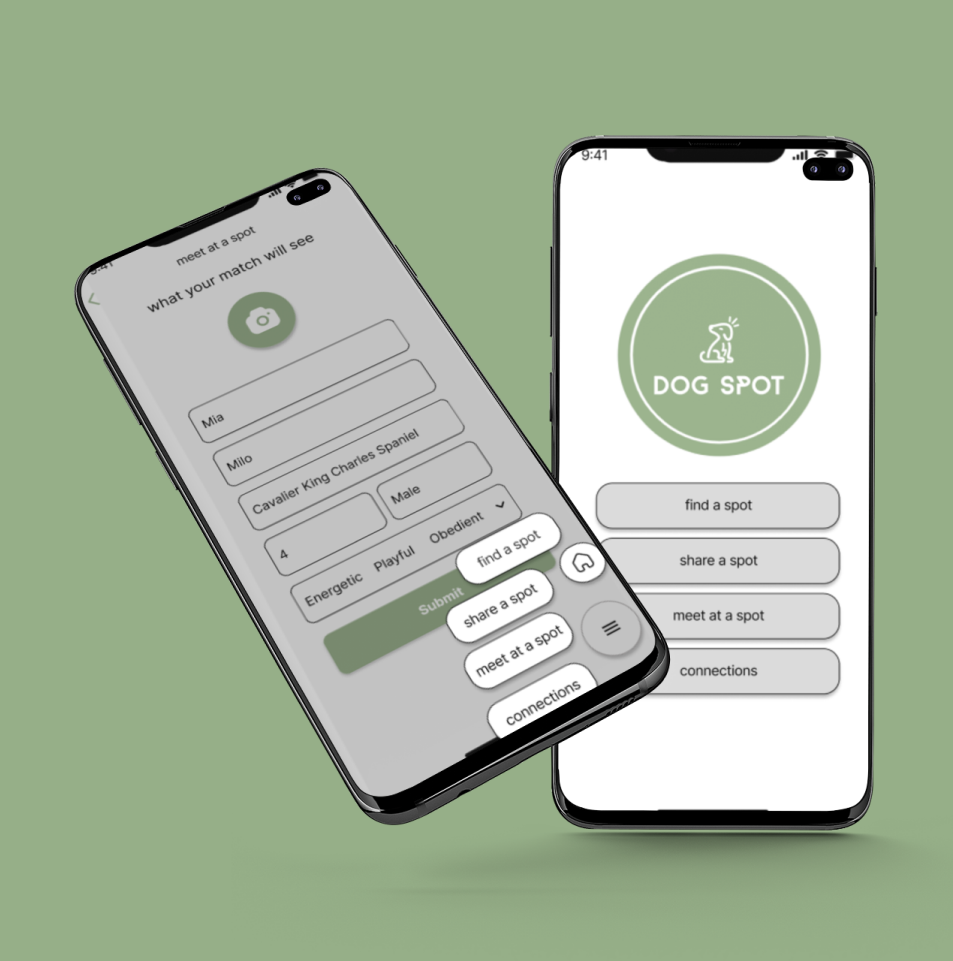

WWF Australia
Wildlife / Protect / Caring
This website was designed to improve the user's experience when adopting and donating at WWF. The user flow was also rethought, including volunteer features.
View Case Study
Pet lover / Take care / Responsibilities
Designing an app that allows pets to roam freely without any restrictions
View Case Study
Personal project
Australia clean energy regulation
Renewable energy / Improve air quality /Mitigate the effects of climate change
The goal is to gain insight into the perspective of visitors to the CER website, familiarize oneself with clean energy policies and programs, and discover potential avenues for enhancing the website's user experience and usability
View Case Study